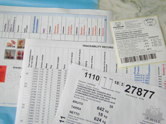
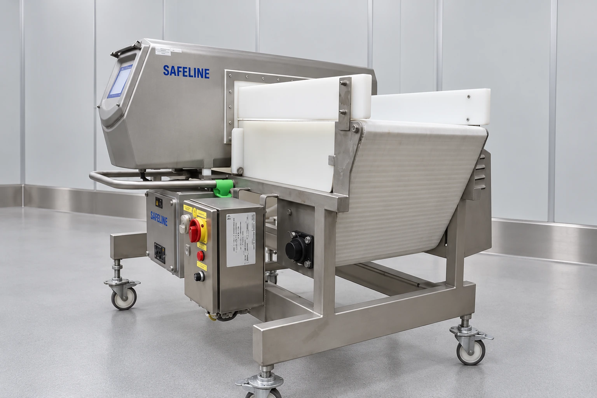
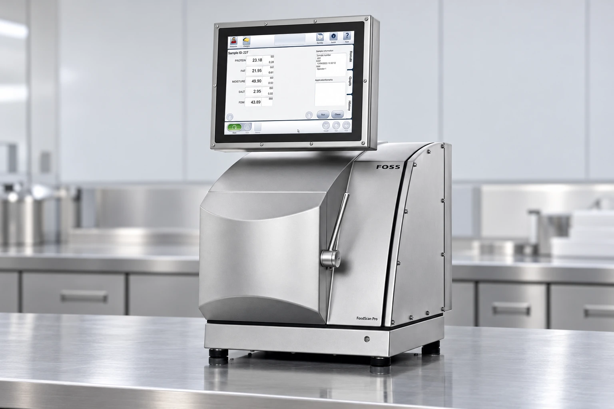

Certificaten.

BRCGS Food Safety
AA+ · Issue 9
Gecertificeerd volgens de BRCGS Global Standard for Food Safety na een onaangekondigde audit.
Bekijk certificaat 2026PDF, opent in een nieuw tabblad
Beter Leven
Verwerker · Varken 1 ster
Het Beter Leven-keurmerk heeft betrekking op dierenwelzijn. Wils is gecertificeerd als verwerker van varkensvlees met 1 ster. Dit geldt alleen voor producten die onder het keurmerk geleverd worden.
Bekijk certificaat 2026PDF, opent in een nieuw tabbladACS
Autocontrolesysteem
Ons autocontrolesysteem is gebaseerd op de sectorale gids G-018. Het certificaat omvat ook module GM1 voor export naar derde landen.
Bekijk certificaat 2026PDF, opent in een nieuw tabbladOnze kwaliteitswerking.
Vleesbedrijf P. Wils werkt met een intern kwaliteitssysteem en een autocontrolesysteem voor de uitsnijderij, gebaseerd op de sectorale gids G-018 en de HACCP-principes.
Bekijk onze productieTraceerbaarheid
Registratie en productetikettering ondersteunen de traceerbaarheid van onze producten.

Productcontrole
Metaaldetectie
Metaaldetectie helpt metaaldeeltjes in het product op te sporen.

Samenstelling en FoodScan
FoodScan analyseert vleesmonsters met nabij-infraroodlicht. Daarmee kunnen onder meer het vet-, vocht- en eiwitgehalte worden bepaald.

Kwaliteitsdienst.
Vermeld bij uw vraag
- Productnaam of artikelcode
- De gewenste documentatie
- Eventuele eisen voor uw toepassing
Gaat het over een levering? Voeg de leveringsreferentie en de gegevens van het productetiket toe.